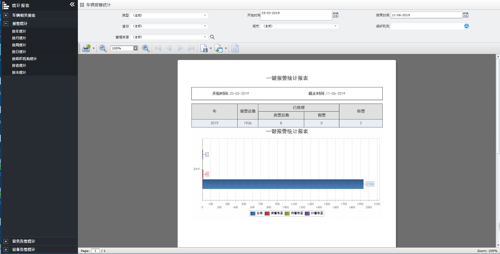

报警统计
按年、月、周、日、组织机构、省、市来统计一键报警，以表格和图表的形式分别展示。统计内容包括：报警总数、已处理数、转警数等信息。
以按年统计为例介绍一下报警统计业务各项功能的操作方法。
1.
在左侧导航菜单栏中单击
车辆相关报表
→按年统计
进入
“报警统计-按年统计”
页面，如下图所示。

Fig 77 报警统计-按年统计
2.
设置查询条件，系统支持单个和组合查询。
3.
设置开始结束时间，单击
〖
〗
按钮，报表中展示所有符合查询条件的警情。
Note:
•
查询、打印、导出、设置水印功能同视频流量报表，不再赘述。
•
按月、周、日、组织机构、省、市、车辆的统计操作方法同按年统计，不再赘述。
Parent topic: 统计报表